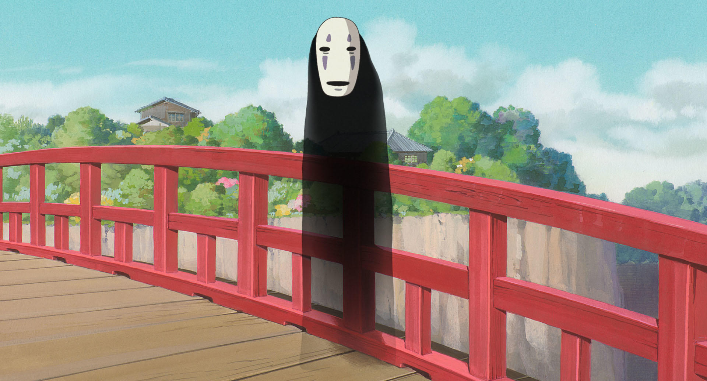

· Directed by Hayao Miyazaki
Spirited Away
On the way to her family's new home, ten-year-old Chihiro wanders into a world of spirits. When her parents are turned into pigs, she takes a job at a bathhouse run by the witch Yubaba to find a way to free them.
It won the Academy Award for Best Animated Feature, the first hand-drawn, non-English-language film to win.
More about Spirited Away →